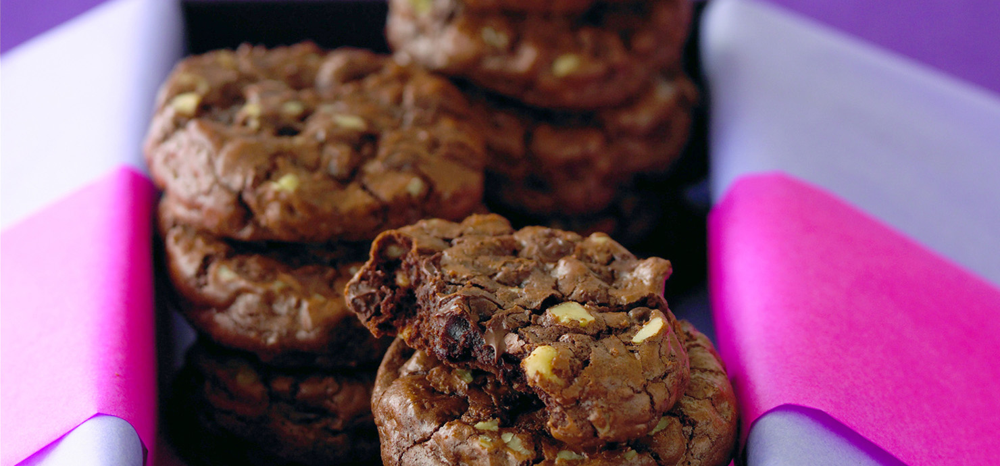

Double Chocolate Chip Cookies

This recipe was handed down from my great great grandfather ghiradelli choco. It is a old family recipe form
the oldest of the choco linage. This is the first time ever this recipe has left the ghirachoco family, and
is truly one of a kind. This recipe makes fourty 30 gram cookies.
Ingredients
- 12 ounces Semi-Sweet Chocolate Chips
- 10 ounces 60% bitter sweet chocolate chips
- 6 tbsp of unsalted butter
- 3 eggs
- 1 cup of sugar
- 1/3 cup all purpose flower
- 1/2 tsp baking powder
- 1 cup walnuts chopped
Recipe
- In double boiler over hot water, melt bittersweet chocolate chips and butter.
- In large bowl with electric mixer or whisk, beat eggs and sugar until thick; stir into chocolate mixture.
- In small bowl, stir together flour and baking powder; stir into chocolate mixture.
- Gently mix in semi-sweet chocolate chips and walnuts.
- Using a sheet of plastic wrap, form dough into two logs, each 2 inches in diameter and about 12 inches long.
As dough will be quite soft, use plastic wrap to hold dough in log shape.
- Wrap tightly; refrigerate at least 1 hour or until firm.
- Heat oven to 375°F. Unwrap dough; with sharp knife, cut into 3/4 inch slices.
- Place slices 1 1/2 inches apart on greased or parchment-lined cookie sheet.
- Bake 12 to 14 minutes or until shiny crust forms on top but interior is still soft.
Cool on baking sheet; store in airtight tin up to 1 week